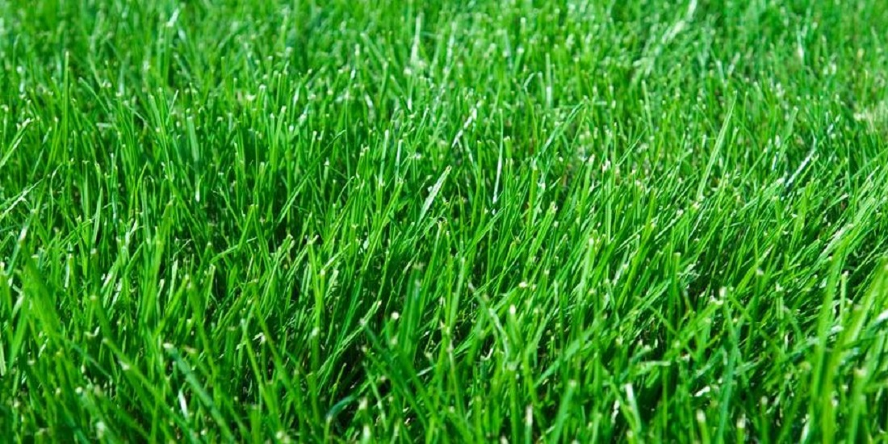
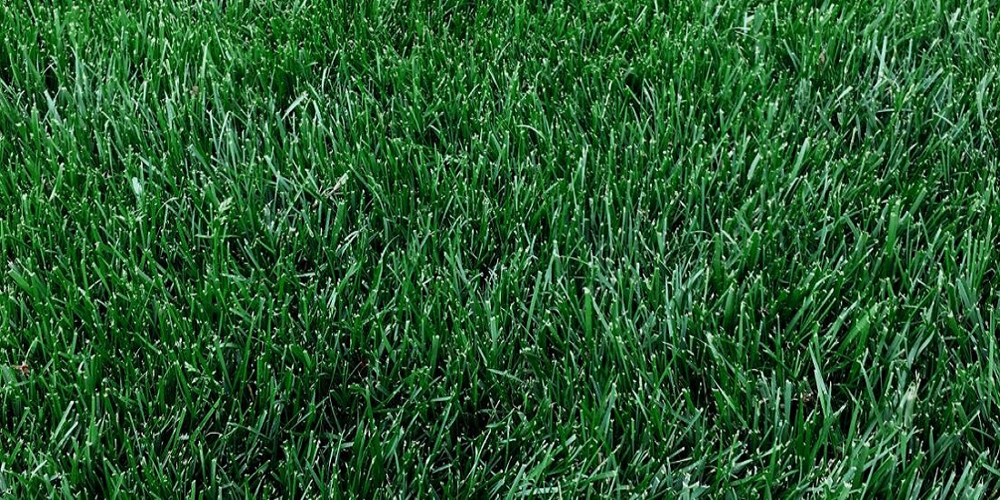

Winters are too cold for warm-season grasses to survive, and summers are too hot for most cool-season types. A lawn is an investment — think about how you'll actually use your yard before choosing between Fescue and Kentucky Bluegrass.

Handles heavy foot traffic without damage — a good fit for kids, active dogs, or a yard that gets used a lot.
A heat-tolerant, cool-season grass with a deep root system that helps with drought and heat protection.
Tough and dense, making it harder for weeds to get a foothold.
In Kansas City, fescue may need over-seeding in the fall to recover from summer stress.
Our humidity can cause brown patches — avoid this by watering earlier in the day rather than in the evening.

Excellent color and a soft, pleasant texture — blades are thin with rounded tips.
Spreads through rhizomes, quickly filling in and healing after damage.
Uses more water than other grasses and needs proper irrigation to stay looking its best.
Without good sun exposure, it will likely thin out or die.
Still not sure which is right for your project? Give us a call at 913-681-2500 — we're happy to help you decide.
Use our sod calculator to figure out how much you need, then give us a call.